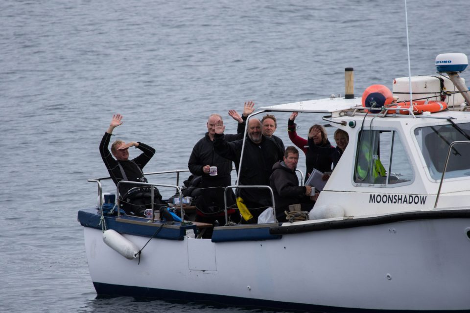

About the Club

The Argonauts has a wide membership including a broad range of ages, professions and backgrounds. We meet every other Tuesday evening at the Queen Mother Sports Centreon Vauxhall Bridge Road, and then at the Constitution pub, 42 Churton Street, Pimlico, London, SW1V 2LP, both near Victoria station, London.
Formed in the 1960s, we are affiliated to the British Sub-Aqua Club (BSAC), the sport's governing body in the UK.
The Argonauts club is run by a group of active divers, on a voluntary basis. Members have a wealth of diving experience, and include fully qualified instructors. We cater for all levels of diver from complete beginner to advanced diver. We also welcome divers who have qualified with other agencies, such as PADI.
As well as training, the club organises a lively dive schedule in the UK throughout the summer months, with locations including the south coast, Scotland and the Farne Islands. We also arrange trips further afield, including Malta, Croatia and the Red Sea.
We are a friendly, sociable lot, and the club's social secretary arranges non-diving activities including a summer BBQ, Christmas party, walks, lectures and exhibition visits.
Please see here for details of membership costs.
Contact us at argonautsmembership@gmail.com
Find us on Facebook https://www.facebook.com/ArgonautsDiving
About the Site
The site was originally designed by Website design by Amendit Design Services. It was updated in 2012 by James Gardnerand the Argonauts Committee to a custom CMS and moved in 2014 to Wordpress.
Updated August 2022